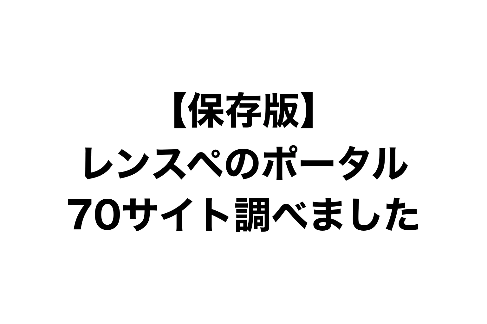

「〇〇ってポータル、載せている人いますか?」
レンスペをやっている人どうしで、よく聞かれる質問です。
載せる先がふえれば、予約の入り口がふえます。
でも、どこに載せればいいのか。
手数料は? 本当に予約は入るの?
調べようとしても、情報がバラバラで、しかも古いんです。
そこで、レンタルスペースを載せられるポータルサイトを、ジャンル別に70サイト調べました。
手数料、掲載数、サービス開始、予約の入りやすさ、登録のかんたんさ。
数字はすべて、2026年9月30日に公式ページで確かめたものです。
掲載先をさがすときに開けるよう、ブックマークしておいてください。
調査日: 2026年9月30日 / 収録: 70サイト+終了・統合9件
結論: まず載せるのは、この4つ
ぼくはいま17店舗を運営していて(累計23店舗)、店の予約はほとんどポータルから入ります。
その経験から言うと、まず載せるのはこの4つです。
| サイト | 手数料 | 掲載数 | 予約の入りやすさ | 強いジャンル |
|---|---|---|---|---|
| インスタベース | 35% | 48,000件以上 | S🟢 | 会議室・ダンス・ジム |
| スペースマーケット | 30%(プロモーションリンクは5%) | 37,000件超 | S🟢 | パーティー・撮影 |
| カシカシ | 25%(パートナーリンクは0%) | 約3,000件 | A🟢 | 撮影・パーティー |
| ヨヤッピン(旧スペイシー) | 35% | 約1.4万カ所 | B🟡 | 貸し会議室 |
予約の柱は、インスタベースとスペースマーケット。
カシカシは、撮影スタジオで毎月しっかり入ります。
ヨヤッピンは貸し会議室向き。
GMOの空箱は、後回しでいいです。約10か月・4店舗に載せて、予約は1件でした。
専門のポータルは、この4つを作りこんでから足してください。
ぼくの店の予約は、どこから来ているか
2026年3〜9月に、ポータルから入った予約の内訳です。
(件数ではなく割合。店舗のカレンダーから集計)
| ジャンル | 1位 | 2位 | 3位 |
|---|---|---|---|
| ダンス | インスタベース 79% | スペースマーケット 20% | カシカシ 1% |
| 撮影 | スペースマーケット 52% | カシカシ 35% | インスタベース 13% |
| 貸し会議室 | インスタベース 72% | スペースマーケット 26% | ヨヤッピン 2% |
| パーティー | スペースマーケット 80% | インスタベース 20% | − |
ジャンルによって、1位がちがいます。
ダンスと貸し会議室は、インスタベース。
撮影とパーティーは、スペースマーケット。
※撮影のカシカシには、公式HPから入った予約(カシカシのパートナーリンク経由)もふくみます。
12万円払って、予約は0件でした
ぼくは以前、12万円を払って、撮影スタジオ専門のポータルに掲載しました。
予約は、1件も入りませんでした。
原因は、客層だったと思います。
そのサイトは、制作会社など法人の撮影がメインのお客さんでした。
ぼくの店は推し活向けで、お客さんは個人です。
ほかのスタジオには、ちゃんと予約が入っているはずです。合わなかったのは、ぼくの店の用途でした。
今回調べてわかったのは、専門のポータルの多くが「掲載料型」だということです。
月額や年額を先に払って、予約ではなく問い合わせを送ってもらう形。
予約が入らなくても、お金はかかります。
大手のポータルは、予約が入ったときだけ手数料を払う成果報酬です。
予約がゼロなら、支払いもゼロ。
載せる前に、そのサイトの客層と自分の店の用途が合っているかを見る。
有料の掲載は、無料のところで予約が回ってから。
これが、ぼくの結論です。
表の見かた
順位(おすすめ順)
①予約の入りやすさ ②お金のリスク(成果報酬・無料が先、月額・年額はあと) ③登録のかんたんさ、の順で決めました。
予約の入りやすさ
- S … 自分の店で、予約の柱になっている
- A … 自分の店で、毎月予約が入る
- B … 運営が大きな利用実績を公表している(会員・利用者が数万人以上など)
- C … 小規模・新しい・利用実績の公表がない
- D … 自分の店で掲載して、予約がほぼ入らなかった
- − … 判断材料なし(掲載数も利用実績も非公開)
🟢は自分の店の実測、🟡は運営の発表、💬はぼくの体感です。
登録のかんたんさ
- ◎ … 無料・Webで申し込み、数日で掲載
- ○ … 無料だが審査や担当者とのやりとりがある、または少額の年額
- △ … 営業担当を通す・掲載料や契約が必要・料金が非公開
型
- 予約型 … 予約と支払いまでサイトで完結。成果報酬
- 問合せ型 … お客さんから問い合わせが来る。掲載料のことが多い
- 名鑑 … 載せるだけ。予約機能なし
- 仲介 … 運営が間に入って、予約や撮影を取りまとめる
- 月額予約 … 予約システムを月額で契約すると、ポータルにも載る
① 総合(何でも載る)
総合は、上の4つがそのまま1〜4位です。
| 順位 | サイト | 型 | 手数料・費用 | 掲載数 | 開始 | 予約 | 登録 | ひとこと |
|---|---|---|---|---|---|---|---|---|
| 1 | インスタベース | 予約型 | 35%(初期・月額0円) | 48,000件以上(2025/12) | 2014年5月 | S🟢 | ◎ | 今回調べた中で掲載数が最多。会議室・ダンス・ジムに強い。月間予約受付15万件以上(2025/9) |
| 2 | スペースマーケット | 予約型 | 30%+税。プロモーションリンク経由は5% | 37,000件超(2025/2) | 2014年4月 | S🟢 | ◎ | 2014年からの老舗。パーティー・撮影に強い。流通総額31.9億円(2026年1〜6月・前年比+10.7%) |
| 3 | カシカシ | 予約型 | 25%。パートナーリンク経由は0% | 約3,000件(2025/6) | 2019年10月ごろ | A🟢 | ◎ | 手数料が安い。撮影・パーティーで伸びている。振込手数料330円(2026/4利用分〜) |
| 4 | ヨヤッピン(旧スペイシー) | 予約型 | 35%(初期・月額0円) | 約1.4万カ所(2026/3) | 2026年3月(前身スペイシーは2013年) | B🟡 | ◎ | 会員60万人+JR西日本の会員基盤。会議室向き。自店の会議室ではポータル予約の2%。ダブルブッキングに注意 |
| 5 | スペなび | 予約型 | 25%(初期・月額0円) | 非公開 | 2026年1月リニューアル | C🟡 | ◎ | 姉妹サイト「会場ベストサーチ」に同時掲載できる。審査は通常2〜3営業日 |
| 6 | PUBLICSPACE | 予約型 | 15%(税別・初期・月額0円) | 585件(2026/9) | 2024年5月 | C🟡 | ◎ | 手数料15%は今回の総合型でいちばん安い。規模はまだ小さい |
| 7 | エイチ(eichiii) | 予約型 | システム利用料(率は非公開)・初期0円 | 「全国10,000の会場」表記 | 未確認 | C🟡 | ○ | HPの情報をもとに運営が掲載ページを作ってくれる。予約申請→承認制。現地払いも選べる |
| 8 | 空箱 byGMO | 予約型 | 非公開(初期・月額0円) | 非公開(シーズスペース約1,400件を統合) | 2025年9月 | D🟢 | ◎ | GMO系の新顔。2026/9にシーズスペースを引き継ぎ。自店で約10か月・4店舗に載せて、予約は1件(2026/9時点) |
手数料は15〜35%。いちばん安いのはPUBLICSPACEの15%ですが、掲載585件とまだ小さいです。
空箱 byGMOは8位にしました。ぼくの店では約10か月・4店舗に載せて、予約は1件です。ただ、2026年9月にシーズスペースの約1,400件を引き継いだばかりなので、これから変わるかもしれません。
自分で集めたお客さんの予約は、手数料を下げられます。スペースマーケットのプロモーションリンクなら5%、カシカシのパートナーリンクなら0%。公式HPの予約ボタンに使えます。
② 会議室・ワークスペース
貸し会議室なら、まず総合のインスタベース(ぼくの店では会議室の予約の72%)とスペースマーケット。専門サイトは、そのあとです。
| 順位 | サイト | 型 | 手数料・費用 | 掲載数 | 開始 | 予約 | 登録 | ひとこと |
|---|---|---|---|---|---|---|---|---|
| 1 | ミーティングナビ | 問合せ型 | 無料プラン/年22,000円 | 1,199会場・8,919室 | 未確認(10年以上) | C🟡 | ○ | 無料から載せられ、有料でも年2.2万円 |
| 2 | 会場ナビ | 問合せ型 | 紹介コース=成約時10%のみ/月11,000円〜+登録料55,000円 | 非公開 | 2008年ごろ | − | ○ | 個人も掲載可と規約に明記。紹介コースはサイトに載らず、会場探しの依頼を回してもらう形。有料プランは1年契約 |
| 3 | 貸会議室.COM | 問合せ型 | 無料 | 非公開 | 未確認 | C💬 | ◎ | 自分で登録して公開できる無料掲載。サイトの規模は小さめ |
| 4 | 会議室.COM | 問合せ型 | 月額5,000円〜(成約手数料なし) | 5,000会場以上 | 2000年 | C🟡 | △ | 25年続く老舗。自社の予約ページへ送客。掲載まで約2〜3週間 |
| 5 | ミツカル!会議室とホール | 名鑑 | 無料 | 3,986施設 | 未確認 | C🟡 | ○ | 無料の横断検索。運営法人名がなく信頼度は低め |
| 6 | NATULUCK | 仲介 | 掲載料・初期0円/売上歩合(率は非公開) | 東京577室 | 未確認 | − | △ | 予約受付・集金まで代わりにやってくれる |
| 7 | 会議室セレクト | 問合せ型 | 月額固定(金額非公開)・成果報酬なし | 1,002施設・3,494会場 | 2016年7月ごろ | C🟡 | △ | 関西に強い。掲載まで約2〜3週間 |
| 8 | コワーキングジャパン | 名鑑 | 無料(バナー広告は有料) | 1,451件 | 未確認 | C🟡 | ○ | 無料掲載の老舗コワーキング名鑑 |
| 9 | コワーキングスペース検索 | 名鑑 | 無料/有料プラン(金額非公開) | 1,842件 | 未確認 | C🟡 | ○ | 運営会社向け管理画面つきの名鑑 |
| 10 | コワークナビ | 名鑑 | 無料 | 首都圏974施設 | 未確認 | C🟡 | ○ | 首都圏のコワーキング名鑑。個人運営 |
| 11 | NIKKEI OFFICE PASS | 仲介 | 非公開 | 1,500拠点以上 | 2018年4月 | − | △ | 法人会員のドロップイン利用。加盟店を募集中。コワーキング・シェアオフィス向け |
| 12 | WORKUS | 仲介 | 非公開 | 約1,400拠点(2026/9) | 2021年7月 | − | △ | 法人向け30分単位のワークスペース予約。公開の募集窓口なし・事業者どうしの提携 |
| 13 | いいオフィス/いい会議室 | FC | FC加盟(いい会議室: 加盟金70万円・月5.5万円・ロイヤリティ10%) | 900店舗超 | 未確認 | − | △ | 掲載ではなくFC加盟。屋号に「いいオフィス」が付く |
予約まで完結する会議室専門のポータルは、ほぼ残っていませんでした。スペイシーはヨヤッピンに統合、NTTのdroppinは終了。
いまは、月額の掲載料を払って問い合わせをもらう型が中心です。お金をかけずに試すなら、ミーティングナビの無料プランか、会場ナビの紹介コース(サイトには載らず、会場探しの依頼を回してもらう形。成約したときだけ10%)。
③ フィットネス(ダンス・ヨガ・ジム・スポーツ)
ダンスなら、まず総合のインスタベース(ぼくの店ではダンスの予約の79%)。専門サイトは、そのあとです。
| 順位 | サイト | 型 | 手数料・費用 | 掲載数 | 開始 | 予約 | 登録 | ひとこと |
|---|---|---|---|---|---|---|---|---|
| 1 | ジムカリ | 予約型 | 35%(カード決済手数料込み・初期・月額0円) | 873件 | 2021年5月 | B🟡 | ◎ | レンタルジム特化。ジム系では今回最多。最短1営業日で掲載。上位ジムにはレビュー125件 |
| 2 | Dance Studio Lab | 予約型 | 15%(決済代行手数料込み・掲載無料) | 89件 | 2024年12月ごろ | C🟡 | ◎ | ダンス専門。バミリ・床材・鏡の面数で探せる。2026/9に自社集客分の手数料優遇リンクを開始 |
| 3 | フィットスペース | 予約型 | 30%(カード決済手数料込み・初期・月額0円) | 339件(ジム245・ダンス75・ヨガ19) | 2024年秋ごろ | C🟡 | ◎ | フィットネス専用。LINE通知あり。月間予約1,000件突破(2025/3)。2025/3の300件から伸びは鈍い |
| 4 | THE PERSON | 予約型 | 成果報酬(率は非公開)・登録料0円 | 1,100店舗以上(2023/3) | 2018年8月 | B🟡 | ○ | トレーナー向けシェアジム。店名が「THE PERSON ○○」になる。登録トレーナー4,000名以上(2021/12) |
| 5 | TOKYO DANCE LIFE | 名鑑 | 無料(メールで申込) | 非公開 | 未確認 | − | ○ | ダンス情報誌のスタジオ検索。予約機能なし |
| 6 | ダンスポ!DANCER'S SPOT | 名鑑 | 未確認(フォームで申込) | 非公開 | 未確認 | − | ○ | 地域別「おすすめ5選」のまとめ記事型 |
| 7 | テニスベア | 予約型 | 10%(カード決済は15%) | 170施設超(2022/12) | 2019年ごろ | C🟡 | ○ | テニスコート専用 |
| 8 | LaBOLA総合予約 | 月額予約 | 初期55,000円・月11,000円〜 | 428施設 | 2010年ごろ | C🟡 | △ | フットサル・体育館・コート向け |
ダンススタジオなら、Dance Studio Lab。ダンス専門で、手数料は15%(決済手数料こみ)。まだ89件と小さく、都内が中心です。
レンタルジムは、今回調べた中ではジムカリ(873件)がいちばん多いです。ヨガ専門のポータルは見つかりませんでした。ヨガは総合とフィットスペースで載せる形です。
④ 撮影スタジオ・ロケ地
撮影なら、まず総合のスペースマーケット(ぼくの店では撮影の予約の52%)とカシカシ(35%)。専門サイトは、そのあとです。
| 順位 | サイト | 型 | 手数料・費用 | 掲載数 | 開始 | 予約 | 登録 | ひとこと |
|---|---|---|---|---|---|---|---|---|
| 1 | ホワイトパンダ | 予約型 | 無料プランあり(有料プランの金額は資料請求) | 845件(2026/9) | 2020年9月 | B🟡 | ◎ | 無料で最短当日掲載。予約リクエストが取れる。年間利用者約16.1万人(2022/4)。会議室などが主な用途だと見送りの場合あり |
| 2 | SHOOTEST | 問合せ型 | 月1万円(税抜)・年契約+制作費5千円 | 787店舗(2026/7) | 2017年 | B🟡 | ○ | 法人・制作会社の利用が多い老舗。年間約70万ユーザー |
| 3 | STUDIO PRESS | 問合せ型 | 月3,300円〜 または 掲載無料+成果報酬30% | 181件 | 未確認 | C🟡 | ○ | Instagram連動。成果報酬プランを選べる |
| 4 | STUDIOMALL | 問合せ型 | 年21,450円〜(10/31まで半額)/月4,290円〜・成約手数料0円 | 335件 | 未確認 | C🟡 | ○ | 利用者の8割が法人 |
| 5 | ロケフィット | 仲介 | 一般物件0円/撮影スタジオ営業者は紹介手数料 | 2,000件以上 | 2011年9月(旧ロケスタ) | B🟡 | ○ | 日程調整・立会いまで代行するロケ地仲介。月間問い合わせ300件以上 |
| 6 | コスコン | 問合せ型 | 掲載料のみ(金額非公開)・手数料なし | 東京316件 | 未確認 | C🟡 | ○ | コスプレ撮影スタジオ特化 |
| 7 | スタジオ検索ドットコム | 問合せ型 | 無料(相互リンクが条件) | 非公開 | 未確認 | − | ◎ | 無料掲載。通常7営業日以内 |
| 8 | sQueeze | 問合せ型 | 年11,000円 | 87件 | 未確認 | C🟡 | ○ | 年1.1万円と安い。絞り込み検索特化 |
| 9 | 白ホリドットコム | 予約型 | 非公開 | 東京124件 | 2023年4月 | C🟡 | ○ | 白ホリゾント専門。白ホリがないと対象外 |
| 10 | ハウスタ.com | 問合せ型 | 月4,950円〜(3ヶ月無料キャンペーン) | 非公開 | 未確認 | − | ○ | ハウススタジオ特化。法人利用9割以上をうたう |
| 11 | ロケスポット | 問合せ型 | 1件無料/月6,500円〜 | 未確認 | 未確認 | − | ◎ | 1件目無料・最低利用期間なし |
| 12 | Tロケ | 仲介 | 掲載0円(既存ロケ地運営者は登録料の場合あり) | 未確認 | 2018年 | C🟡 | ○ | 新聞印刷会社系のロケ地窓口。年間数百件の問い合わせ |
| 13 | 東京ロケーションボックス | 仲介 | 無料 | 未確認 | 2001年ごろ | − | ○ | 東京都の公的なロケ地窓口。都内の所有者・管理者に限る |
| 14 | ロケバコ | 仲介 | 掲載無料・完全成果報酬(率は非公開) | 未確認 | 未確認 | − | △ | TVCM・ドラマ向けの管理委託 |
| 15 | 撮影NAVI.com | 問合せ型 | 非公開(広告担当から連絡) | 非公開 | 未確認 | − | △ | スタジオ・ロケ地・機材までワンストップ |
| 16 | [R]studio | 問合せ型 | 非公開 | 非公開 | 未確認 | − | △ | 写真や床材・壁材で探せる |
| 17 | studio DATA BASE | 問合せ型 | 年12万円(税別) | 非公開 | 未確認 | − | △ | 広告写真誌「コマーシャル・フォト」系のプロ向け |
| 18 | ロケなび! | 問合せ型 | 12ヶ月契約 月約5万円〜 | 非公開 | 2007年 | C🟡 | △ | ロケ地専門誌「ロケーションジャパン」と連動。約2万3,000人のユーザー |
| 19 | ロケステーション | 問合せ型 | 非公開 | 約950件 | 未確認 | − | △ | ロケ地+ロケバス・ケータリング |
| 20 | Cospot Media | 名鑑 | 広告掲載(3万〜10万円以上から相談) | 未確認 | 未確認 | − | △ | コスプレSNSと連動した広告 |
撮影の専門サイトは、法人の利用が多いところがめだちます(STUDIOMALLは利用者の8割、ハウスタ.comは9割以上が法人と公表)。推し活やコスプレ向けのスタジオは、まず総合のポータルで、専門ならコスプレ特化のコスコンです。
撮影のポータルは、ほぼ全部が問い合わせ型です。予約ではなく、電話やメールの問い合わせが来ます。料金も月額・年額の掲載料が多いです。
カレンダー連携が確認できたのはホワイトパンダだけ。それも、Googleカレンダーを読みこむだけの片方向です。ホワイトパンダ経由の予約は、自分でカレンダーに入れないとダブルブッキングします。
⑤ パーティー・イベント・キッチン
パーティールームなら、まず総合のスペースマーケット(ぼくの店ではパーティーの予約の80%)。専門サイトは、そのあとです。
| 順位 | サイト | 型 | 手数料・費用 | 掲載数 | 開始 | 予約 | 登録 | ひとこと |
|---|---|---|---|---|---|---|---|---|
| 1 | 会場ベストサーチ | 問合せ型 | 掲載無料・成果報酬(率は個別) | 2,000会場以上 | 未確認 | B🟡 | ○ | 幹事が最大10会場へ一括問い合わせ。スペなびと同時掲載可。会員10万人以上・月間100万PV以上 |
| 2 | SHOPCOUNTER | 予約型 | 35% | 累計約27,000スペース(2025/12) | 2015年5月ごろ | B🟡 | ◎ | ポップアップ・催事の出店マッチング。利用テナント約8.2万・累計成約約7.7万件 |
| 3 | シェアレストラン | 予約型 | 20%(登録・年会費0円) | 1,194店舗 | 2020年3月 | B🟡 | ◎ | 飲食店の空き時間を月単位で間貸し。累計開業1,000店舗超・年間流通1億円(2025/5) |
| 4 | 軒先ビジネス | 予約型 | 38.5%(税込) | 1,805件 | 2008年 | C🟡 | ◎ | ポップアップ・物販・キッチンカーに強い老舗。審査結果は5営業日以内 |
| 5 | みんなのイベント | 問合せ型 | 掲載無料・成果報酬(率は非公開) | 484件 | 2025年4月 | C🟡 | ○ | 飲食付きの貸切宴会向け |
| 6 | sharekitchen.net | 名鑑 | 無料 | 約103件 | 未確認 | C🟡 | ○ | 営業許可の種類で探せるシェアキッチン専門 |
| 7 | VENUE LINK | 問合せ型 | 掲載料・成約料 無料 | 非公開 | 2023年7月 | − | △ | 企業イベントのプロが選ぶ選定制 |
| 8 | CASE | 問合せ型 | 1年目無料・2年目から月3万円〜 | 約44会場 | 2024年4月(β版) | C🟡 | △ | 過去のイベント事例から会場を探せる |
| 9 | スペースラボ | 問合せ型 | 非公開 | 20,362件 | 未確認 | − | ○ | 商業施設・スーパーの催事区画向け。一般的なレンタルスペースには合いにくい |
| 10 | PARTY HUNTER | 仲介 | 非公開 | 非公開 | 2015年12月 | − | △ | 会場紹介と企画・装飾までまとめて請け負う |
| 11 | パーティーコンシェルジュ | 仲介 | 非公開 | 非公開 | 未確認 | − | △ | 法人パーティーの会場探しコンシェルジュ |
宴会場や企業イベント向けの、問い合わせ型が中心です。小さなパーティールームは、総合の4つが主戦場になります。
ポップアップの出店なら軒先ビジネスとSHOPCOUNTER、キッチンつきならシェアレストラン(手数料20%)。
⑥ レンタルサロン・シェアサロン
レンタルサロンも、まずは総合のポータルの「サロン」カテゴリーに載せるところからです。
| 順位 | サイト | 型 | 手数料・費用 | 掲載数 | 開始 | 予約 | 登録 | ひとこと |
|---|---|---|---|---|---|---|---|---|
| 1 | シェアサロンズ | 問合せ型 | 3年間無料(キャンペーン) | 未確認 | 未確認 | C🟡 | ◎ | 美容職とサロンをつなぐ。時間貸しで絞り込める |
| 2 | サロマチ | 予約型 | 1予約550円(登録・掲載0円) | 非公開 | 未確認 | − | ◎ | 美容室の空席を30分単位で貸す。東京・神奈川 |
| 3 | b-pocket | 仲介 | 掲載・初期0円/美容師の売上に応じた段階制 | 480軒(2023/7) | 2022年10月 | C🟡 | ○ | 面貸しの売上管理まで代行 |
| 4 | AIR SALON | 予約型 | 利用料金規定による(非公開) | 非公開 | 2016年 | − | ○ | 「美容師のためのAirbnb」 |
| 5 | Re・Make | 仲介 | 月額0円(初回掲載費は未確認) | 非公開 | 2019年5月リニューアル | − | △ | 60分1,000円〜の時間貸し。代金回収も代行 |
美容室の空き席を貸すマッチングが中心です。エステ・占い・カウンセリングの個室を専門に扱うポータルは、見つかりませんでした。総合のポータルの「サロン」カテゴリーで載せる形です。
入れかわりもはげしく、今回の調査でも2サイトが閉じていました。
⑦ その他(音楽スタジオ・キッズ)
| 順位 | サイト | 型 | 手数料・費用 | 掲載数 | 開始 | 予約 | 登録 | ひとこと |
|---|---|---|---|---|---|---|---|---|
| 1 | いこーよ | 名鑑 | 完全無料 | 「レンタルスペース」タグ227件 | 2008年12月 | B🟡 | ◎ | 子育て層向け。ママ会・誕生日会の送客に。予約機能なし。0〜9歳の親の8割以上が利用(運営発表) |
| 2 | スタジオル | 月額予約 | 月4,980円〜+決済手数料5%(30日無料) | 1,216スタジオ(2026/1) | 2017年10月 | B🟡 | △ | 音楽スタジオ予約。「ダンス利用可」で絞り込める。会員27万人・累計Web予約303万件(2026/1) |
| 3 | さがスタ | 名鑑 | 無料プランあり(有料は非公開) | 1,000件以上 | 未確認 | C🟡 | ○ | 音楽出版社が運営する音楽スタジオ検索 |
| 4 | Supernice!音楽スタジオ | 名鑑 | 記載なし | 1,089件 | 未確認 | C🟡 | ○ | リハーサル・レコーディングスタジオの名鑑 |
| 5 | スタねっと♪ | 名鑑 | 紹介掲載は無料(予約機能の新規受付は終了) | 非公開 | 未確認 | − | ○ | 老舗の音楽スタジオ名鑑。オンライン予約の新規受付は2025/9/1で終了 |
意外だったのがスタジオルです。音楽スタジオの予約サイトですが、「ダンス利用可」で絞りこめて、会員は27万人。ただし月額4,980円からの契約型です。
いこーよは子育て世代向けで、掲載は完全無料。予約機能はありませんが、ママ会や誕生日会の集客に使えます。
終わった・名前が変わったポータル
古い比較記事に出てくるのに、もう使えないところです。
- スペイシー(SPACEE) … 2026年3月にJR西日本「+PLACE」と統合し、ヨヤッピンに改称
- シーズスペース(旧くーある) … 2026年9月1日に空箱 byGMOへ事業を承継(移行完了は9月30日予定)
- droppin(NTTドコモビジネス) … 2026年2月28日にサービス終了
- HOURS(ジムマッチング) … 2024年12月にジムマッチングを終了
- スタねっとオンライン予約 … 新規受付を2025年9月1日で終了(名鑑は継続)
- メンガシ … 2026/9/30時点でサイトが応答しない(終了の告知は見つからず)
- ShareLon … 2026/9/30時点でドメインが未登録
- レンタルジムパーク … 2026/9/30時点でサイトが閲覧できない
- Suup … 2026/9/30時点で公式サイトが非公開状態
よく混同されますが、UP NOW(自分の予約サイトを作るサービス)とスペースモール(スペースマーケットの子会社の運営代行)は、ポータルではありません。
まとめ: 4つを作りこんでから、専門を足す
- まずは総合の4つ(インスタベース・スペースマーケット・カシカシ・ヨヤッピン)。成果報酬なので、予約がゼロなら支払いもゼロ
- GMOの空箱は後回しでいい。ぼくの店では約10か月・4店舗で予約1件
- 強いポータルはジャンルでちがう。ダンス・貸し会議室はインスタベース、撮影・パーティーはスペースマーケット
- 専門のポータルの多くは、掲載料+問い合わせ型。有料は、無料のところで予約が回ってから
- 足すなら、ダンスはDance Studio Lab(15%)、レンタルジムはジムカリ、撮影はホワイトパンダ(無料プラン)から
- 自分で集めたお客さんは、スペースマーケットのプロモーションリンク(5%)かカシカシのパートナーリンク(0%)で
数字は2026年9月30日時点です。手数料や条件は変わるので、登録する前に各サイトで確かめてください。
表のサイト名から公式ページに飛べます。
あなたのスペースのジャンル、いま何サイトに載っていますか?
▶ 【レンタルスペース】ポータルサイトは、ぜんぶに載せなさい
▼もう1つの副業、AI社員だけのeBay輸出店の実録🐹

▼ブログ(レンスペ×eBay、全記事まとめ)

ポータルの載せ方から、公式HP・自社集客まで、教科書にぜんぶ書いています。
レンタルスペース経営の教科書

販売価格は3部売れるごとに2,000円ずつ値上がりします（上限あり）。内容・最新価格は販売ページをご確認ください。